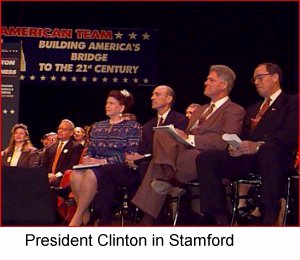

On the Horizon

As we head into the final days
of the campaign, we need your help
energizing your community to
GET OUT THE VOTE!Call the Clinton/Gore office number
below to volunteer.Connecticut Highlights
September 24 - Hillary Rodham Clinton
in New London to celebrate
the Family and Medical Leave ActOctober 7 - President Clinton in Stamford
to receive the endorsement of
2,500 CEO's and business leadersHartford volunteer Angelo Conti
is profiled as a Volunteer of the WeekHartford resident Hank Eliot, Jr. writes in to
the 5th edition of America's Home PageBeacon Falls resident James Parker is profiled
Clinton-Gore '96 Headquarters
243 Farmington Avenue
Hartford, CT 06105Phone: 860-525-1996
Fax: 860-525-9975
State Director: Toni Harp
Connecticut Democrats '96
243 Farmington Avenue
Hartford, CT 06105Phone: 860-278-5454
Fax: 860-278-3921
The Coordinated Campaign is a distinct entity,
directed by the Democratic National Party and the
State Democratic Parties, and designed
to elect Democrats to all levels of office.
Paid for by Clinton/Gore ’96 General Election Committee, Inc.